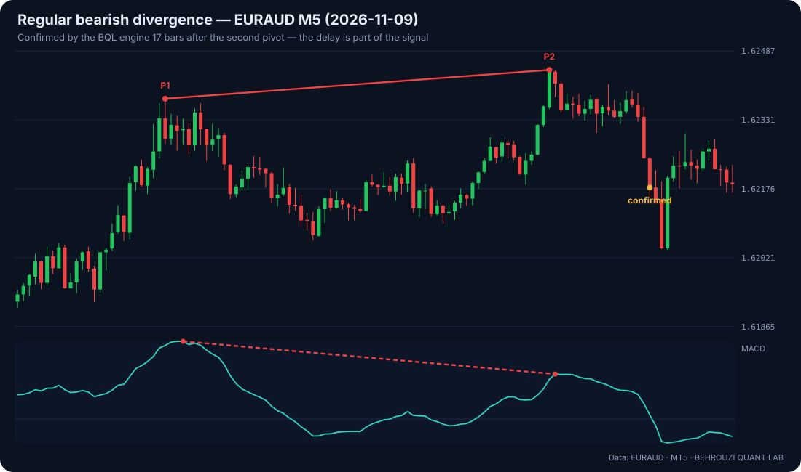
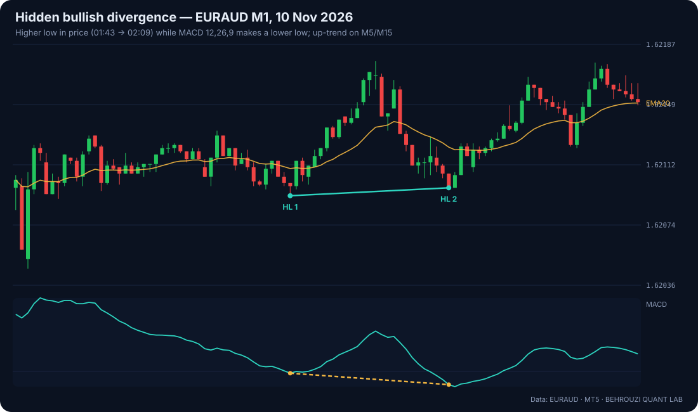

BQL RESEARCH
BQL RESEARCH
Quantitative Research. Market Intelligence. Evidence-Based Trading.
Research notes, market structure and the psychology of decision-making — with data, methods and sources you can check.

Featured · Quantitative Research
What 12 months of data say about MACD divergence
We tested regular and hidden divergence on three FX pairs. On its own, it is a coin flip at 1R — here is why that is useful to know.
ReadArchive

Every swing has a delay — measure it, do not hide it
A pivot can only be confirmed after price moves away from it. We show you exactly how long that takes.
What 12 months of data say about MACD divergence
We tested regular and hidden divergence on three FX pairs. On its own, it is a coin flip at 1R — here is why that is useful to know.

Hidden divergence, explained without the myths
A higher low in price with a lower low in momentum: what it shows, and what it does not.
Fear and greed are not opposites — they are the same mistake
Both are reactions to an outcome that has not happened yet. Behavioural finance explains why they feel so strong.
Discipline is a system, not a personality trait
Traders who "lack discipline" usually lack rules that are specific enough to follow.
Emotional control under real money
You cannot switch emotions off. You can design your trading so they have less to act on.
Seven cognitive biases every trader should recognise
Predictable errors with names — knowing them is the first defence.
The FX market in numbers: who trades $7.5 trillion a day
The largest market in the world is also the most decentralised. What that means for a retail trader.
No results — try fewer filters.